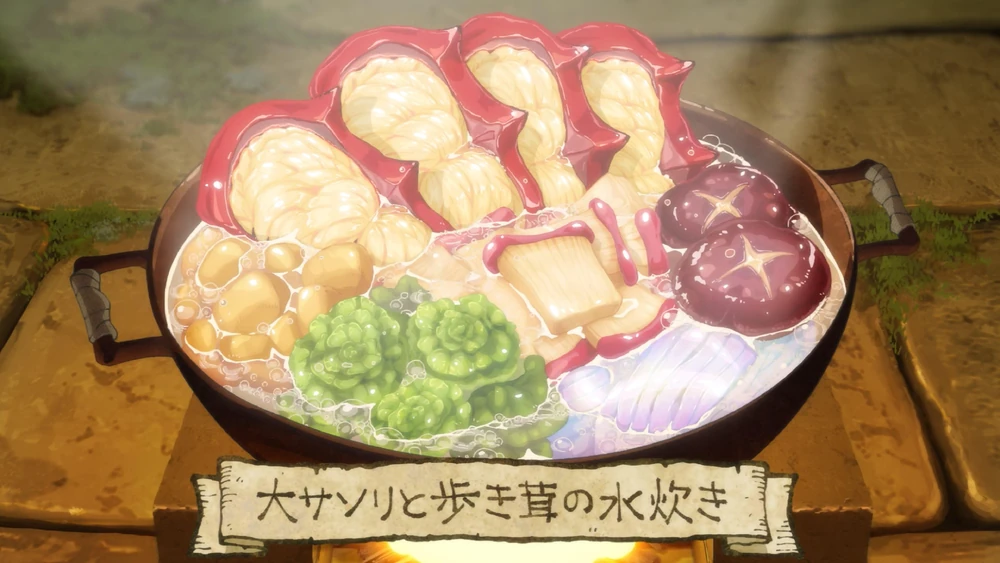

Huge Scorpion and Walking Mushroom Hotpot

Description
A combination of the flavorful and tender meat from a Huge Scorpion and the meaty, umami-filled Walking Mushrooms, this hotpot is a favorite for a hearty meal after a long dungeon crawl.
Ingredients
- Huge Scorpion
- Walking Mushroom
- Dungeon Herbs
- Slime Oil
- Dungeon Onions and Garlic
Steps
- Hunt a Huge Scorpion in the dungeon, carefully remove the shell, and extract the meat from the claws and tail. The scorpion meat has a rich, lobster-like flavor.
- Gather Walking Mushrooms from the forest of fungi within the dungeon. Clean them, but keep the caps whole for a meaty bite.
- In a large cauldron, heat slime oil and sauté dungeon onions and garlic herbs until fragrant.
- Add the huge scorpion meat and mushrooms, along with water from the crystal springs.
- Bring to a boil and add dungeon greens, spicy moss bulbs, and salt from the dungeon rocks.
- Simmer the hotpot until the scorpion meat is tender, and the mushroom caps are soft and bursting with flavor.
- Serve with a side of dungeon root vegetables for a hearty, nutritious meal that boosts energy after battle.
Back to homepage